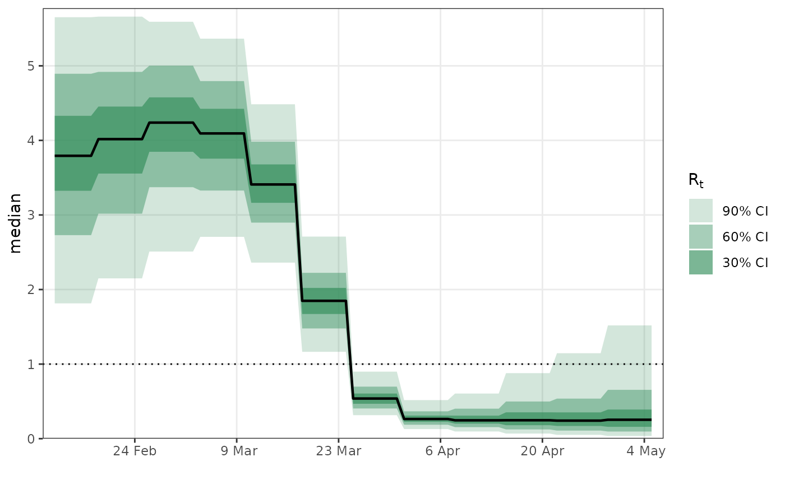
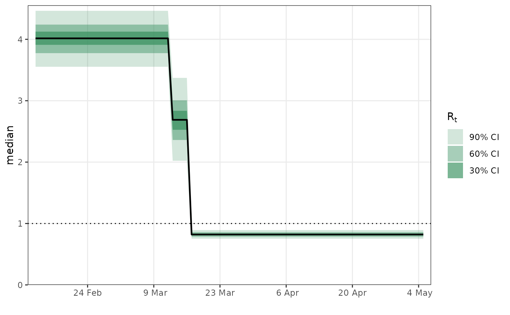
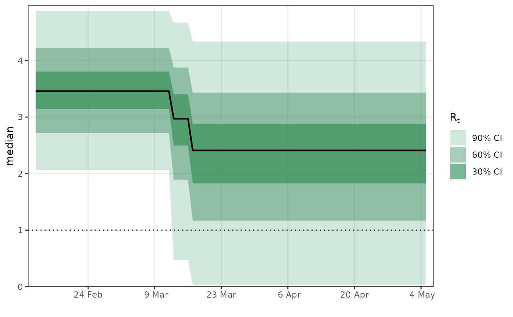

epirt defines a model for reproduction rates. For more
details on the model assumptions, please read the model description
vignette.
An object of class formula which determines the linear predictor for
the reproduction rates. The left hand side must take the form R(group, date), where group and date variables.
group must be a factor vector indicating group membership (i.e. country, state, age cohort), and date must be a vector of class Date.
This is syntactic sugar for the reproduction number in the given group at the given date.
The link function. This must be either "identity", "log", or a call
to scaled_logit.
If TRUE then the covariates for the regression
are centered to have mean zero. All of the priors are then interpreted as
prior on the centered covariates. Defaults to FALSE.
Same as in stan_glm. In addition to the
rstanarm provided priors,
a shifted_gamma can be used. Note: If
autoscale=TRUE in the call to the prior distribution then
automatic rescaling of the prior may take place.
Same as in stan_glm. Prior for
the regression intercept (if it exists).
Same as in stan_glmer. Only
used if the formula argument specifies random effects. Alternatively, when every random effects term has
one coefficient (such as (0 + x || group)), rstanarm::normal(0, s) gives the standard deviation of
each term a half-normal prior with scale s (a vector of scales gives one per term).
Additional arguments for model.frame
An object of class epirt.
epirt has a formula argument which defines the linear predictor, an argument link defining the link function,
and additional arguments to specify priors on parameters making up the linear predictor.
A general R formula gives a symbolic description of a model. It takes the form y ~ model, where y is the response
and model is a collection of terms separated by the + operator. model fully defines a linear predictor used to predict y.
In this case, the "response" being modeled are reproduction numbers which are unobserved.
epirt therefore requires that the left hand side of the formula takes the form R(group, date),
where group and date refer to variables representing the region and date respectively.
The right hand side can consist of fixed effects, random effects, and autocorrelation terms.
# \donttest{
library(epidemia)
library(ggplot2)
data("EuropeCovid")
options(mc.cores = parallel::detectCores())
data <- EuropeCovid$data
data$week <- lubridate::week(data$date)
# collect arguments for epim
args <- list(
inf = epiinf(gen = EuropeCovid$si),
obs = epiobs(deaths ~ 1, i2o = EuropeCovid$inf2death, link = scaled_logit(0.02)),
data = data,
algorithm = "fullrank", # For speed - should generally use "sampling"
iter = 2e4,
group_subset = "France",
seed = 12345,
refresh = 0
)
# a simple random walk model for R
args$rt <- epirt(
formula = R(country, date) ~ rw(time = week),
link = scaled_logit(7)
)
fm1 <- do.call(epim, args)
#> Warning: Pareto k diagnostic value is 0.79. Resampling is unreliable. Increasing the number of draws or decreasing tol_rel_obj may help.
plot_rt(fm1) + theme_bw()
#> Warning: `aes_string()` was deprecated in ggplot2 3.0.0.
#> ℹ Please use tidy evaluation idioms with `aes()`.
#> ℹ See also `vignette("ggplot2-in-packages")` for more information.
#> ℹ The deprecated feature was likely used in the epidemia package.
#> Please report the issue at
#> <https://github.com/ImperialCollegeLondon/epidemia/issues>.
#> Warning: Using `size` aesthetic for lines was deprecated in ggplot2 3.4.0.
#> ℹ Please use `linewidth` instead.
#> ℹ The deprecated feature was likely used in the epidemia package.
#> Please report the issue at
#> <https://github.com/ImperialCollegeLondon/epidemia/issues>.

# Modeling effects of NPIs
args$rt <- epirt(
formula = R(country, date) ~ 1 + lockdown + public_events,
link = scaled_logit(7)
)
fm2 <- do.call(epim, args)
#> Warning: Pareto k diagnostic value is 1.62. Resampling is disabled. Decreasing tol_rel_obj may help if variational algorithm has terminated prematurely. Otherwise consider using sampling instead.
plot_rt(fm2) + theme_bw()

# shifted gamma prior for NPI effects
args$rt <- epirt(
formula = R(country, date) ~ 1 + lockdown + public_events,
link = scaled_logit(7),
prior = shifted_gamma(shape = 1/2, scale = 1, shift = log(1.05)/2)
)
# How does the implied prior look?
args$prior_PD <- TRUE
fm3 <- do.call(epim, args)
plot_rt(fm3) + theme_bw()

# }